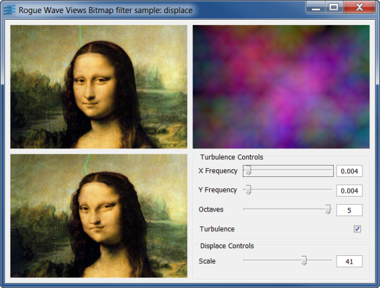
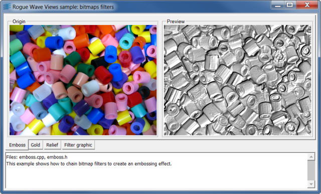
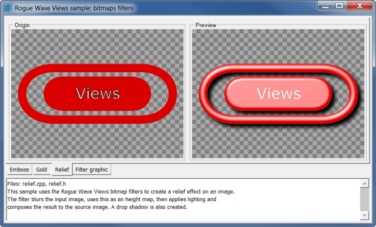

displaceShows how to distort an image using turbulence.
This example shows how to create bitmap filters and change their parameters to achieve visual effects.
For demonstration purposes, this sample code uses portable GUI
elements from the Gadgets package of the Rogue Wave Views suite.
Feel free to use these elements in your application if you have
a license for Rogue Wave Views or for Rogue Wave Views Controls.
This information applies to the classes located in the library ilvgadgt,
listed in the README file that you can find in the installation directory.
IlvDisplayIlvRGBBitmapDataIlvFilterFlowIlvBitmapFilterIlvBitmapembossShows how to achieve an embossing effect.
This example shows how to chain bitmap filters to create an embossing effect.
IlvDisplayIlvRGBBitmapDataIlvFilterFlowIlvBitmapFilterIlvBitmapfiltgraphShows how to use the the IlvFilteredGraphic class.
This sample uses the IlvFilteredGraphic class to apply
image processing effects to graphic objects.
IlvDisplayIlvRGBBitmapDataIlvFilteredGraphicIlvBitmapgoldShows how to use bitmap filters to create a gold effect.
This sample uses the Rogue Wave Views bitmap filters to create a gold effect on an image.
The filter uses a combination of two turbulences at various octaves and frequencies
to create the gold relief.
IlvDisplayIlvRGBBitmapDataIlvFilterFlowIlvBitmapFilterIlvBitmapreliefShows how to use bitmap filters to create a relief effect.
This sample uses the Rogue Wave Views bitmap filters to create a relief effect on an image.
The filter blurs the input image, uses this as an height map, then applies lighting and
composes the result to the source image.
A drop shadow is also created.
IlvDisplayIlvRGBBitmapDataIlvFilterFlowIlvBitmapFilterIlvBitmap